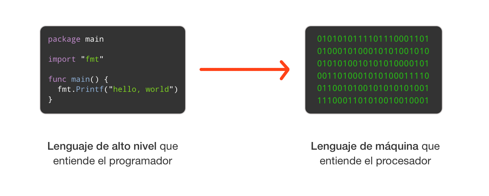
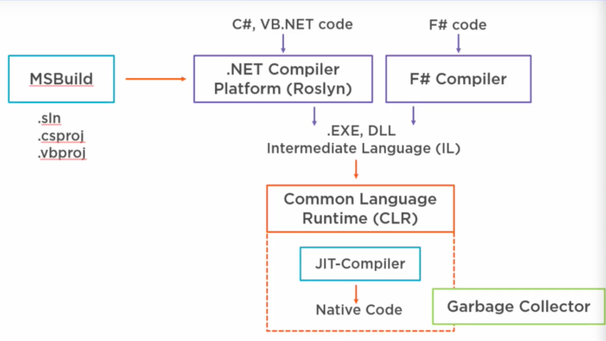

Introducción a C# y .NET
El lenguaje y sus posibilidades, el SDK .NET, la CLI, tipos de datos, estructuras de control y cómo compila.
El lenguaje C#
SDK .NET + CLI
Tipos de datos
Control de flujo
Compilación
Proyectos

¿Qué es C#?
Un lenguaje orientado a objetos, desarrollado por Microsoft como parte de la plataforma .NET. Se pronuncia "si sharp".
Datos de interés
- Creado por el danés Anders Hejlsberg, autor también de Turbo Pascal y Delphi.
- Estandarizado por ECMA (ECMA-334) e ISO/IEC 23270.
- En constante evolución: hoy vamos por la versión 12+.
- Hereda mucho de C / C++ y se parece a Java.
Características de C#
- Sintaxis sencilla, muy parecida a Java.
- Fuertemente tipado y orientado a objetos (todo vive en una clase).
- Multiparadigma y con programación multihilo.
- Sistema de tipos unificado: todo deriva de
System.Object. - Gestión de memoria con garbage collector.
- Manejo de errores con excepciones.
- Manejo de colecciones con LINQ.
- Organización flexible: namespaces, proyectos y soluciones.
¿Qué puedo programar con C#?
Consola
Aplicaciones de línea de comandos en Windows, Linux y macOS con .NET.
Escritorio
Windows Forms, WPF, UWP, y GTK# en Linux.
Web
ASP.NET / ASP.NET Core (multiplataforma).
Móvil
Apps multiplataforma (Android, iOS) con .NET MAUI / Xamarin.
Videojuegos
Unity, Godot, MonoGame — PC y consolas.
IoT
Dispositivos y microframeworks.
Lenguajes interpretados vs compilados
Un script requiere un intérprete; un programa requiere un compilador. Cada enfoque optimiza algo distinto.
Interpretado
Optimizado para hacerle la vida fácil al programador (ciclo escribir→probar más rápido), a costa de más trabajo para la máquina en ejecución.
ciclo de desarrollo rápidoCompilado
Optimizado para la ejecución. Se traduce a código máquina, por lo que depende de la arquitectura para la que se compiló.
ejecución optimizadaLibrería · API · SDK · Framework
Librería (library)
Conjunto de elementos (funciones, clases, tipos, constantes…) reutilizables para facilitar la implementación de un programa.
API
Application Programming Interface: la interfaz para usar las funcionalidades de una librería o sistema, sin conocer su implementación interna.
SDK
Colección de librerías, APIs, documentación y utilidades. Ofrece herramientas para que las uses como quieras.
Framework
Similar al SDK, pero vos insertás tu código en él y el framework lo ejecuta en el momento adecuado (inversión de control).
El ecosistema .NET
De varias bifurcaciones históricas a un .NET unificado, multiplataforma y open source.
.NET Framework
El original (2002), solo Windows. Versión final 4.8.1. Closed source.
WindowsMono / Xamarin
Mono: implementación open source multiplataforma. Xamarin (móvil) fue adquirida por Microsoft y liberada.
multiplataforma.NET Core → .NET 5+
Reescritura open source y multiplataforma. Hoy unificado como .NET 5, 6, 7, 8…
open sourceIDEs y editores
Entornos de desarrollo integrado para escribir, compilar y depurar C#.
VS Code
Editor liviano, open source, multiplataforma, con extensiones para C#.
Visual Studio
IDE completo de Microsoft (Windows / Mac).
Rider
IDE de JetBrains para .NET, multiplataforma.
MonoDevelop
IDE open source para apps GTK#/Mono.
La línea de comandos de .NET
Un comando de la CLI se compone de: el driver (dotnet), el comando, sus argumentos y opciones.
# driver comando argumento opción parámetro
dotnet new console --framework net8.0
dotnet
El driver: la herramienta de línea de comandos.
new
El comando a ejecutar.
console
El argumento (qué plantilla crear).
--framework net8.0
Una opción con su parámetro.
Comandos útiles
| Comando | Qué hace |
|---|---|
dotnet --version | Versión del SDK instalado. |
dotnet --info · --list-sdks | Información del entorno y SDKs instalados. |
dotnet new list | Lista las plantillas de proyecto disponibles. |
dotnet new console | Crea un proyecto de consola. |
dotnet new classlib -o nombre | Crea una librería de clases. |
dotnet run | Compila y ejecuta el proyecto local. |
dotnet build | Compila el proyecto. |
dotnet clean | Elimina los archivos de la última compilación. |
Estructura de un proyecto
El archivo .csproj
<Project Sdk="Microsoft.NET.Sdk"> <PropertyGroup> <OutputType>Exe</OutputType> <TargetFramework>net8.0</TargetFramework> <ImplicitUsings>enable</ImplicitUsings> <Nullable>enable</Nullable> </PropertyGroup> </Project>
¿Qué configura?
- OutputType: tipo de salida (Exe / librería).
- TargetFramework: versión de .NET.
- ImplicitUsings: incluye librerías comunes por defecto (archivo
GlobalUsings.g.csautogenerado). Se puede desactivar (disable). - Nullable: avisa sobre el uso de
nullen tipos de referencia.
Tu primer programa
El clásico "Hola, mundo". Desde .NET 6 alcanza con una línea (top-level statements); por debajo sigue existiendo la forma clásica con Main.
El programa mínimo (.NET 6+)
// Program.cs Console.WriteLine("¡Hola, mundo!");
Las top-level statements esconden el Main para simplificar el inicio.
La forma clásica (explícita)
using System; namespace MiApp { class Program { static void Main(string[] args) { Console.WriteLine("¡Hola, mundo!"); } } }
dotnet new console -o hola → cd hola → dotnet runEl objeto Console
Representa los flujos estándar de entrada, salida y error de una aplicación de consola.
Console.WriteLine("Hola"); // muestra un mensaje y salto de línea Console.Write("Sin salto"); // muestra sin salto de línea string linea = Console.ReadLine(); // lee una línea de texto int tecla = Console.Read(); // lee un caracter (int) Console.ReadKey(); // espera una tecla
Tipos de valor vs tipos de referencia
La distinción más importante del sistema de tipos de C#.
Tipo de valor
La variable almacena directamente la instancia. Al asignarla o pasarla a un método, se hace una copia independiente.
Ejemplos: int, bool, char, double, struct, enum.
Tipo de referencia
La variable guarda una referencia a la ubicación en memoria. Al asignarla se copia la referencia, no la instancia.
Ejemplos: class, interface, delegate, string.
También existen los tipos de puntero (uso avanzado, en contextos unsafe).
Tipos simples y struct
Tipos simples (palabras reservadas)
| Tipo | Categoría |
|---|---|
bool | booleano |
int, long, short, byte | enteros |
uint, ulong… | enteros sin signo |
float, double, decimal | punto flotante |
char | caracter |
struct: agrupar variables relacionadas
public struct Coords { public int x, y; public Coords(int p1, int p2) { x = p1; y = p2; } }
Un struct es un tipo de valor: ideal para grupos chicos de datos.
Variables, constantes y operadores
Declarar variables y constantes
int edad = 20; // tipo + nombre + valor double precio = 9.99; string nombre = "Ana"; var ciudad = "Tucumán"; // var: infiere string const double Pi = 3.1416; // no puede cambiar
var no es "sin tipo": el compilador lo infiere y sigue siendo fuertemente tipado.
Operadores
// aritméticos int suma = 3 + 4; int resto = 10 % 3; // 1 // comparación (dan bool) bool mayor = 7 > 5; bool ig = (a == b); // lógicos bool ok = (edad >= 18) && tieneDni; bool no = !activo; // negación // asignación compuesta contador += 1; total *= 2;
El tipo string
string es un alias de System.String (tipo de referencia). Una cadena es una colección de solo lectura de caracteres.
Inicialización
string mensaje = "Hola, mundo!"; string nombre = "Ana"; string vacio = string.Empty;
Concatenación e interpolación
// operador + string a = "Hola, " + nombre; // método Concat string b = string.Concat("Hola, ", nombre); // interpolación (.NET 6+) — la más legible string c = $"Hola, {nombre}!";
string: métodos y conversión
Acceso y métodos útiles
string t = "Ejemplo de C#"; char primero = t[0]; // 'E' int largo = t.Length; // 13 t.ToUpper(); t.ToLower(); t.Substring(0, 3); // "Eje" t.Replace("C#", "C Sharp"); t.Split(' '); t.Trim();
Convertir string → número
string s = "108"; int i; bool ok = int.TryParse(s, out i); // ok = true, i = 108
TryParse devuelve true/false sin lanzar excepción si la cadena no es válida. Lo implementan todos los tipos numéricos, DateTime, etc.
Conversión de tipos
Entre números (cast)
int entero = 10; double d = entero; // implícita (no se pierde) double pi = 3.99; int t = (int)pi; // explícita (cast) -> 3 // con la clase Convert int x = Convert.ToInt32("42");
Desde texto (string → número)
// Parse: lanza excepción si falla int n = int.Parse("123"); // TryParse: seguro (true/false) bool ok = int.TryParse("abc", out int r); // ok = false // cualquier valor -> texto string s = entero.ToString();
double a int se trunca); TryParse para validar entrada de usuario.Tipos nullable
Agregando ? después del tipo, un tipo de valor puede representar también null.
int? edad = null; bool? activo = true; DateTime? fecha = null; string? texto = "esto puede ser null"; // referencia nullable (C# 8+) if (edad is null) { ... } // preguntar por null if (edad.HasValue) { ... } // equivalente para tipos de valor
null.DateTime
Tipo de valor que representa fechas y horas (del año 1 al 9999, calendario gregoriano).
// crear con constructor (año, mes, día, hora, min, seg) DateTime fecha = new DateTime(2023, 5, 15, 8, 30, 0); // la fecha y hora actual DateTime hoy = DateTime.Now; Console.WriteLine($"{hoy:yyyy-MM-dd}");
También se puede inicializar desde un valor devuelto por una propiedad/método, o parsear desde una cadena (DateTime.Parse / TryParse).
Decisión: if / else y switch
if / else
if (condicion) { // instrucciones } else { // instrucciones }
switch
switch (expresion) { case 1: // instrucciones break; case 2: // instrucciones break; default: // instrucciones break; }
Ciclos iterativos
for
for (int i = 0; i < 10; i++) { // ... }
while / do-while
while (cond) { // ... } do { // al menos 1 vez } while (cond);
foreach
foreach (var x in coleccion) { // recorre cada // elemento }
Ideal para recorrer colecciones.
Juntando todo: un mini programa
Pide datos al usuario, los convierte, calcula y decide. Usa casi todo lo de la clase.
Console.Write("¿Cómo te llamás? "); string nombre = Console.ReadLine(); Console.Write("¿En qué año naciste? "); int.TryParse(Console.ReadLine(), out int anio); int edad = DateTime.Now.Year - anio; if (edad >= 18) Console.WriteLine($"Hola {nombre}, sos mayor ({edad})."); else Console.WriteLine($"Hola {nombre}, te faltan {18 - edad}.");
¿Qué practica?
- Entrada con
Console.ReadLine - Conversión con
int.TryParse - Operador de resta y
DateTime.Now - Decisión con
if / else - Interpolación de cadenas
¿Cómo te llamás? Ana
¿En qué año naciste? 2005
Hola Ana, sos mayor (21).
Cómo compila un lenguaje compilado
El compilador traduce el código fuente directo a código máquina para una arquitectura específica (C, C++, Go, Rust…).

Cómo compila .NET
- MSBuild construye la solución/proyecto.
- Roslyn compila el C# y produce un
.exe/.dllen lenguaje intermedio (IL/CIL). - El CLR ejecuta el IL; el JIT lo traduce a código nativo al vuelo.
- El Garbage Collector libera la memoria automáticamente.

El IL es comparable al bytecode de Java: una capa intermedia independiente de la arquitectura.
Roslyn, el compilador
El compilador moderno de C# y Visual Basic, open source (Apache 2.0). No solo compila: expone servicios a las herramientas.
Qué hace
- Comprobación de sintaxis.
- Autocompletado de código.
- Refactorizaciones.
- Y mucho más, desde el IDE o la CLI.
Funcionalidades
- Renombrado inteligente en vivo.
- Refactors como Introduce Local / Inline Temporary.
- Avisos (lightbulbs) para mejorar el código.
- Coloreado de sintaxis e IntelliSense.
Cómo se estructura una app en C#
De lo más chico a lo más grande. Al compilar, todo se empaqueta en ensamblados (.exe o .dll).
Clase
La unidad más pequeña: campos y métodos.
Namespace
Agrupa clases relacionadas.
Proyecto / Solución
El proyecto agrupa namespaces (define la tecnología); la solución agrupa proyectos.